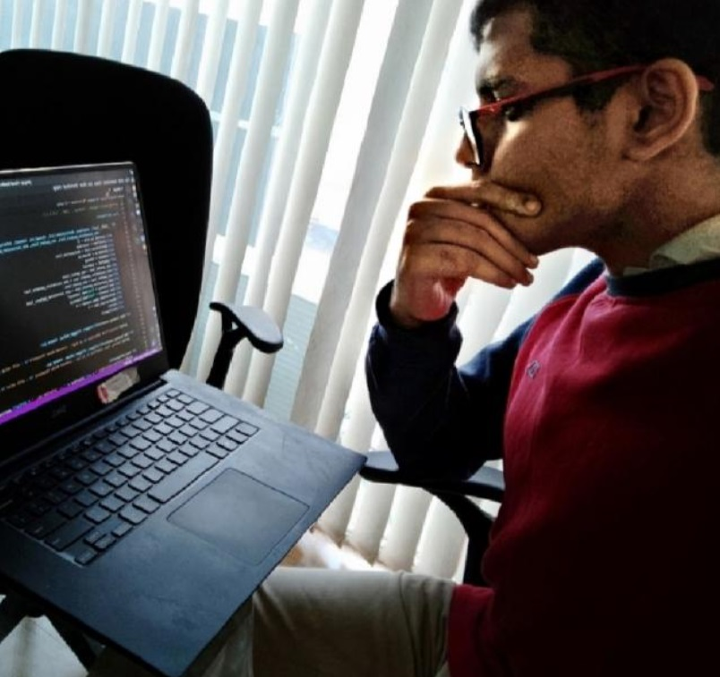

Shreyas Kapale

Contact
Interests
I ❤️ to build things
- Programming, Robots, Space, Physics and Math.
- Playing Computer Games !
My Blog on Image processing and programming
Talks
- Science Hack Day 2017- lightning talk on pentesting wireless networks
- Science Hack Day 2018- How to start programming as a teen
- Avalanche 2018 - R-CNN region based convolutional neural networks
- Avalanche 2019 - Heart Disease detection using KNN
- PyFLAMES 2021- lightning talk on converting normal routers into cloud routers
- PyCON INDIA 2021 - Talk on distributed computing using dask
You can talk with me in
- English
- Hindi
- Kannada
- Marathi
Organizations
- Mentor at Science Hack Day Belgaum
- President at PyGIT Beglaum
- Student Coordinator at PyData Belgaum
- Member of Rotary Club GIT Belgaum
Papers
- Image processing in nutrition - Avalanche 2018 KLS Gogte Institute of Technology
- Heart disease analysis using IOT - Avalanche 2019 KLS Gogte Institute of Technology